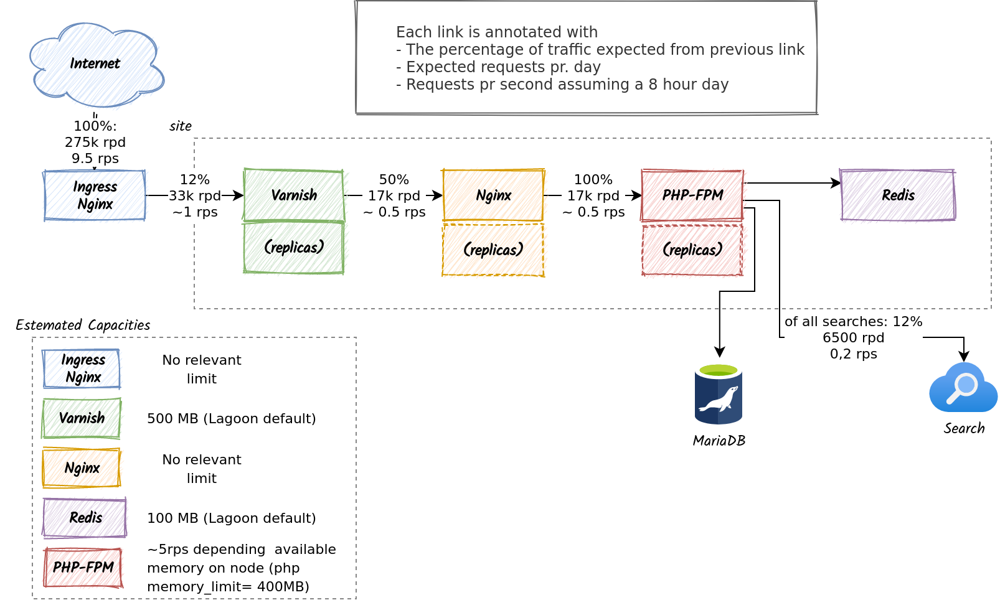

Architecture Decision Record: Rightsizing¶
Context¶
Expected traffic¶

The platform is required to be able to handle an estimated 275.000 page-views per day spread out over 100 websites. A visit to a website that causes the browser to request a single html-document followed by a number of assets is only counted as a single page-view.On a given day about half of the page-views to be made by an authenticated user. We further more expect the busiest site receive about 12% of the traffic.
Given these numbers, we can make some estimates of the expected average load. To stay fairly conservative we will still assume that about 50% of the traffic is anonymous and can thus be cached by Varnish, but we will assume that all all sites gets traffic as if they where the most busy site on the platform (12%).
12% of 275.000 requests gives us a an average of 33.000 requests. To keep to the conservative side, we concentrate the load to a period of 8 hours. We then end up with roughly 1 page-view pr. second.
Expected workload characteristics¶
The platform is hosted on a Kubernetes cluster on which Lagoon is installed. As of late 2021, Lagoons approach to handling rightsizing of PHP- and in particular Drupal-applications is based on a number factors:
- Web workloads are extremely spiky. While a site looks to have to have a sustained load of 5 rps when looking from afar, it will in fact have anything from (eg) 0 to 20 simultaneous users on a given second.
- Resource-requirements are every ephemeral. Even though a request as a peak memory-usage of 128MB, it only requires that amount of memory for a very short period of time.
- Kubernetes nodes has a limit of how many pods will fit on a given node. This will constraint the scheduler from scheduling too many pods to a node even if the workloads has declared a very low resource request.
- With metrics-server enabled, Kubernetes will keep track of the actual available resources on a given node. So, a node with eg. 4GB ram, hosting workloads with a requested resource allocation of 1GB, but actually taking up 3.8GB of ram, will not get scheduled another pod as long as there are other nodes in the cluster that has more resources available.
The consequence of the above is that we can pack a lot more workload onto a single node than what would be expected if you only look at the theoretical maximum resource requirements.
Lagoon resource request defaults¶
Lagoon sets its resource-requests based on a helm values default in the
kubectl-build-deploy-dind image. The default is typically 10Mi pr. container
which can be seen in the nginx-php chart which runs a php and
nginx container. Lagoon configures php-fpm to allow up to 50 children
and allows php to use up to 400Mi memory.
Combining these numbers we can see that a site that is scheduled as if it only uses 20 Megabytes of memory, can in fact take up to 20 Gigabytes. The main thing that keeps this from happening in practice is a a combination of the above assumptions. No node will have more than a limited number of pods, and on a given second, no site will have nearly as many inbound requests as it could have.
Decision¶
Lagoon is a very large and complex solution. Any modification to Lagoon will need to be well tested, and maintained going forward. With this in mind, we should always strive to use Lagoon as it is, unless the alternative is too costly or problematic.
Based on real-live operations feedback from Amazee (creators of Lagoon) and the context outline above we will
- Leave the Lagoon defaults as they are, meaning most pods will request 10Mi of memory.
- Let the scheduler be informed by runtime metrics instead of up front pod resource requests.
- Rely on the node maximum pods to provide some horizontal spread of pods.
Alternatives considered¶
As Lagoon does not give us any manual control over rightsizing out of the box, all alternatives involves modifying Lagoon.
Altering Lagoon Defaults¶
We've inspected the process Lagoon uses to deploy workloads, and determined that it would be possible to alter the defaults used without too many modifications.
The build-deploy-docker-compose.sh script that renders the manifests that
describes a sites workloads via Helm includes a
service-specific values-file. This file can be used to
modify the defaults for the Helm chart. By creating custom container-image for
the build-process based on the upstream Lagoon build image, we can deliver our
own version of this image.
As an example, the following Dockerfile will add a custom values file for the redis service.
FROM docker.io/uselagoon/kubectl-build-deploy-dind:latest
COPY redis-values.yaml /kubectl-build-deploy/
Given the following redis-values.yaml
The Redis deployment would request 100Mi instead of the previous default of 10Mi.
Introduce "t-shirt" sizes¶
Building upon the modification described in the previous chapter, we could go even further and modify the build-script itself. By inspecting project variables we could have the build-script pass in eg. a configurable value for replicaCount for a pod. This would allow us to introduce a small/medium/large concept for sites. This could be taken even further to eg. introduce whole new services into Lagoon.
Consequences¶
This could lead to problems for sites that requires a lot of resources, but given the expected average load, we do not expect this to be a problem even if a site receives an order of magnitude more traffic than the average.
The approach to rightsizing may also be a bad fit if we see a high concentration of "non-spiky" workloads. We know for instance that Redis and in particular Varnish is likely to use a close to constant amount of memory. Should a lot of Redis and Varnish pods end up on the same node, evictions are very likely to occur.
The best way to handle these potential situations is to be knowledgeable about how to operate Kubernetes and Lagoon, and to monitor the workloads as they are in use.